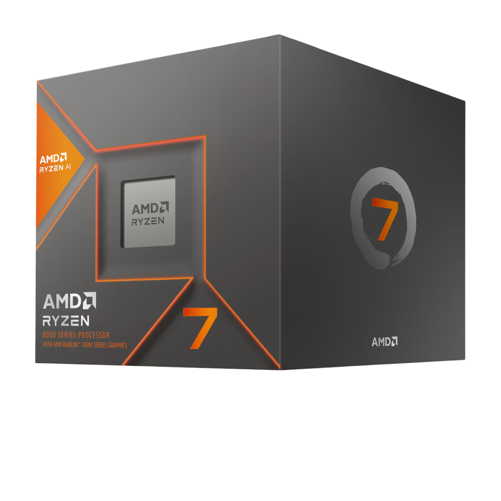

AMD Ryzen™ 7 8700G Desktop Processor

AMD Ryzen™ 7 8700G
AMD Ryzen™ 7 8700G с AMD Ryzen AI — процессор «все и сразу». Для настольных ПК с графикой AMD Radeon™ 780M.
Технические характеристики
Набор Инструкций: x86-64
Архитектура: Zen 4
Количество ядер процессора: 8
Многопоточность (SMT): ДА
Количество потоков: 16
Макс. Частота наддува: Частота до 5,1 ГГц
Базовые часы: 4,2 ГГц
Кэш - память L3: 16 МБ
TDP по умолчанию: 65 Вт
Максимальная рабочая температура 95°C
Архитектура: Zen 4
Количество ядер процессора: 8
Многопоточность (SMT): ДА
Количество потоков: 16
Макс. Частота наддува: Частота до 5,1 ГГц
Базовые часы: 4,2 ГГц
Кэш - память L3: 16 МБ
TDP по умолчанию: 65 Вт
Максимальная рабочая температура 95°C
Подключения
Встроенные порты USB 4 (40 Гбит/с): 2
Порты USB 3.2 Gen 2 (10 Гбит/с): 2
Встроенные порты USB 2.0 (480 Мбит/с): 1
Версия PCI Express®: PCIe® 4.0
Собственные полосы PCIe®: 16
Тип системной памяти: DDR5
Каналы памяти: 2
Макс. Объем памяти: 256 ГБ
Порты USB 3.2 Gen 2 (10 Гбит/с): 2
Встроенные порты USB 2.0 (480 Мбит/с): 1
Версия PCI Express®: PCIe® 4.0
Собственные полосы PCIe®: 16
Тип системной памяти: DDR5
Каналы памяти: 2
Макс. Объем памяти: 256 ГБ
Графические возможности
Графическая модель AMD Radeon™ 780M
Количество графических ядер 12
Частота графического отображения 2900 МГц
Версия DirectX® 12
Версия DisplayPort ™ 2.1
Расширения DisplayPort Адаптивная синхронизация, метаданные HDR , UHBR10
Альтернативный режим USB Type-C® DisplayPort™ ДА
Поддержка нескольких мониторов ДА
Количество графических ядер 12
Частота графического отображения 2900 МГц
Версия DirectX® 12
Версия DisplayPort ™ 2.1
Расширения DisplayPort Адаптивная синхронизация, метаданные HDR , UHBR10
Альтернативный режим USB Type-C® DisplayPort™ ДА
Поддержка нескольких мониторов ДА